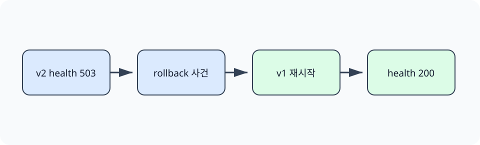

한경 KDT · LLM Agent 개발 & 바이브코딩 · Part 7 · 프로덕션 엔지니어링 · Ch 33 · CI/CD와 배포 운영
경보를 확인한 뒤에도 이전 버전을 정확히 선택하고 서비스 회복을 검증해야 합니다. 최신 배포 기록을 삭제하면 장애 원인과 대응 시점을 추적할 근거도 사라집니다. 이 절에서는 v2 실패 기록을 보존한 채 v1을 가리키는 롤백 사건을 새 리비전으로 추가합니다.
상태 파일만 바꾸고 끝내지 않습니다. 실제 HTTP 프로세스를 v1, v2, v1 순서로 시작해 /health 응답이 200, 503, 200으로 변하는지 확인합니다.
앞 절에서 두 구간 연속 이상을 FIRING으로 판정했고 03절에서 배포 결과를 로컬 이미지 ID로 기록했습니다. 이 절은 그 판단 방식과 기록 형식을 참고하여 별도의 모의 식별자로 복구 절차를 실행합니다. 앞 절의 실제 이미지 ID 기록을 읽는 실습은 아닙니다.
새 조리법의 결과가 나쁘면 기록에서 이전 조리법을 선택할 수 있습니다. 그러나 종이의 번호만 바꿔서는 음식이 회복됐는지 알 수 없습니다. 롤백도 이전 배포를 활성화한 뒤 실제 요청을 보내 복구를 확인해야 합니다.
롤백(rollback)은 문제가 있는 새 배포를 이전에 확인된 리비전으로 되돌리는 운영 절차입니다. 리비전(revision)은 배포 상태의 순서가 있는 버전 기록입니다. 롤백은 코드만 이전으로 바꾸는 작업으로 끝나지 않습니다. 데이터베이스 스키마, 메시지 형식, 캐시, 외부 API가 이전 버전과 호환되는지 확인해야 합니다. 복구 검증은 이전 다이제스트가 활성화되었는지, readiness가 정상인지, 오류와 지연이 회복되는지 확인합니다. 이 실습의 v1과 v2 식별자는 고정 문자열 stable-v1과 regressed-v2를 SHA-256으로 해시해 만든 모의 값입니다. 실제 Docker 이미지 ID나 레지스트리 다이제스트를 조회한 값이 아닙니다. 기록의 digest 필드에는 이 모의 값을 넣어 롤백 이력 형식과 상태 전환을 확인합니다. 운영에서는 앞 절에서 확인한 실제 이미지 식별자를 전달해야 합니다.
앞 절에서 가장 긴 위반 구간이 2로 계산되어 FIRING이 되었습니다. 이 절은 그 신호를 복구 판단에 사용합니다. 롤백 사건에는 출발 리비전, 목표 리비전, 이유, 활성 다이제스트를 함께 기록합니다.
롤백은 이전 다이제스트를 다시 활성화하는 변경이고, 복구 검증은 그 뒤 서비스가 기대 상태로 돌아왔는지 확인하는 별도 단계입니다. 예제는 v1과 v2 배포 사건을 기록하고 경보 프로세스의 실패를 확인한 뒤 rollback.py로 새 사건을 추가합니다. 마지막에는 활성 다이제스트와 HTTP 검사를 모두 확인합니다.
이전 이미지로 돌아갔다고 데이터베이스와 외부 작업까지 되돌아가는 것은 아닙니다. 스키마가 비호환이거나 이미 발송된 메시지가 있다면 코드 롤백만으로 복구되지 않습니다. 배포 전에는 이전 버전이 현재 데이터 구조를 읽을 수 있는지, 롤백 후 어떤 대표 요청으로 기능을 확인할지 정합니다.

활성 식별자 확인은 제어 상태를, HTTP 응답은 실행 상태를 보여 줍니다. 두 결과를 함께 확인해야 기록만 바뀌었거나 프로세스만 우연히 살아 있는 경우를 구분할 수 있습니다.
안정 버전 v1과 회귀가 있는 버전 v2의 모의 식별자를 차례로 로컬 배포 이력에 기록합니다. v2 이후의 고정 메트릭에서 경보 검사 프로세스가 실패하는지 확인합니다. 그다음 롤백 스크립트를 실행해 기존 사건은 보존하고, v1을 활성 상태로 지정하는 새 롤백 사건이 추가되었는지 검사합니다.
준비된 Python 3.12 노트북에서 첫 셀부터 Shift+Enter로 하나씩 실행합니다. 안내한 결과를 먼저 확인하고 지정한 값 하나를 바꿔 비교합니다. 문서를 사용하는 실습은 파일 묶음이 필요합니다. 노트북과 실습 파일 함께 받기 · 처음 실습하는 방법. 전체 코드 복사에는 아래의 Before/After 셀도 포함됩니다. 이 HTML에서는 코드를 실행하지 않습니다.
두 리비전의 모의 배포를 기록한 뒤 경보를 근거로 이전 식별자를 다시 활성화합니다.
이 실습의 v1과 v2 식별자는 고정 문자열 stable-v1과 regressed-v2를 SHA-256으로 해시해 만든 모의 값입니다. 실제 Docker 이미지 ID나 레지스트리 다이제스트를 조회한 값이 아닙니다. 기록의 digest 필드에는 이 모의 값을 넣어 롤백 이력 형식과 상태 전환을 확인합니다. 운영에서는 앞 절에서 확인한 실제 이미지 식별자를 전달해야 합니다.
첫 셀의 Path 탐색은 어느 상위 폴더에서 열어도 Ch33의 pyproject.toml을 기준으로 실습 폴더를 찾습니다. 뒤의 subprocess.run(..., cwd=lab, capture_output=True)은 명령을 별도 프로세스로 실행하고 화면 문구와 종료 코드를 함께 반환합니다. 이 보조 코드는 CI를 흉내 내는 공통 실행 경계이며, 각 절의 판정은 다음 셀에서 해당 명령의 실제 반환값을 읽어 결정합니다.
from pathlib import Path
import hashlib, subprocess, sys, tempfile, json, shutil
lab = next((p for p in [Path.cwd(), *Path.cwd().parents] if p.name == "ch33-cicd" and (p / "pyproject.toml").is_file()), Path("labs/part7/ch33-cicd")).resolve()
v1 = "sha256:" + hashlib.sha256(b"stable-v1").hexdigest()
v2 = "sha256:" + hashlib.sha256(b"regressed-v2").hexdigest()롤백은 이전 모의 식별자를 다시 활성화하는 변경이고, 복구 검증은 그 뒤 서비스가 기대 상태로 돌아왔는지 확인하는 별도 단계입니다. 예제는 v1과 v2 배포 사건을 기록하고 경보 프로세스의 실패를 확인한 뒤 rollback.py로 새 사건을 추가합니다. 마지막에는 활성 모의 식별자와 HTTP 검사를 모두 확인합니다.
temp = tempfile.TemporaryDirectory()
t = Path(temp.name)
shutil.copytree(lab / "scripts", t / "scripts")
(t / "runs").mkdir()
for digest in (v1, v2):
result = subprocess.run([sys.executable, "scripts/deploy.py", digest], cwd=t, text=True, capture_output=True)
print(result.stdout.strip())
print(json.loads((t / "runs/deployment.json").read_text()))deployed revision=1 digest=sha256:fcb67e1b039a...
deployed revision=2 digest=sha256:9e909250ecb4...
[{'revision': 1, 'event': 'deploy', 'digest': 'sha256:fcb67e1b039aad4c998a635c47ffe5d09eacb6bbccc98acbdeed863861729307', 'status': 'ready'}, {'revision': 2, 'event': 'deploy', 'digest': 'sha256:9e909250ecb485a21861853887a9ffacd61dbf3af37eb93481bfb91ca3244f4e', 'status': 'ready'}]
확인할 점 — v1·v2 배포 기록, 경보 종료 코드 1, 새 롤백 사건과 활성 v1 식별자를 순서대로 확인합니다. 마지막 HTTP 검사가 복구된 응답을 반환하는지도 확인합니다.
Before에서는 v2 HTTP 프로세스의 /health가 503과 regressed를 반환하고 운영 검사도 FIRING, 종료 코드 1입니다. After에서는 기존 배포 이력을 삭제하지 않고 롤백 사건을 새 리비전으로 추가합니다. 이어 v1 HTTP 프로세스를 다시 시작해 /health가 200과 ok를 반환하는지 확인합니다. 이 실습은 로컬 실제 요청 복구를 확인하지만 클라우드 트래픽 전환과 데이터베이스 호환성은 검증하지 않습니다.
앞의 실행 예제를 실행한 같은 노트북에서 Before 다음 After 순서로 실행합니다. 출력은 실제 실행 결과입니다.
v2 배포 후의 고정 운영 자료에서 경보 프로세스는 종료 코드 1을 반환합니다.
failed = subprocess.run([sys.executable, str(lab / "scripts/check_metrics.py")], text=True, capture_output=True)
print(failed.stdout.strip().splitlines()[-1], "exit_code=", failed.returncode)
assert failed.returncode == 1alert: FIRING longest_streak=2 exit_code= 1
롤백 스크립트로 새 롤백 사건을 추가하고 활성 모의 식별자가 v1인지 확인합니다.
이전 이미지로 돌아갔다고 데이터베이스와 외부 작업까지 되돌아가는 것은 아닙니다. 스키마가 비호환이거나 이미 발송된 메시지가 있다면 코드 롤백만으로 복구되지 않습니다. 배포 전에는 이전 버전이 현재 데이터 구조를 읽을 수 있는지, 롤백 후 어떤 대표 요청으로 기능을 확인할지 정합니다.
rolled = subprocess.run([sys.executable, "scripts/rollback.py"], cwd=t, text=True, capture_output=True)
history = json.loads((t / "runs/deployment.json").read_text())
print(rolled.stdout.strip(), "active=", history[-1]["digest"][:19])
http = subprocess.run([sys.executable, str(lab / "scripts/verify_http_rollback.py")], text=True, capture_output=True)
print(http.stdout.strip())
assert rolled.returncode == 0 and history[-1]["digest"] == v1 and http.returncode == 0
temp.cleanup()rolled back 2 -> 1 active= sha256:fcb67e1b039a
200 v1 ok 503 v2 regressed 200 v1 ok
HTTP 200은 이 예제의 health 경로가 응답했다는 사실만 보여 줍니다. 데이터베이스 쓰기, 외부 API, 사용자 핵심 흐름은 별도 확인이 필요합니다. 데이터 형식이 이전 버전과 호환되지 않으면 애플리케이션 이미지만 되돌려도 복구되지 않습니다.
다음 학습과 이어지는 지점 — Ch38 Hooks는 이 장의 평가, 배포 전 검사, 배포 후 health 확인을 작업 경계에서 자동으로 호출합니다.
둘 다 선택한 이미지 다이제스트를 배포 환경의 활성 버전으로 지정합니다.
활성 다이제스트, readiness, 핵심 요청, 오류율과 지연의 회복을 확인해야 합니다.
이전 버전과 호환되지 않는 데이터베이스 스키마 변경이 이미 적용된 사례입니다.
경보 조건, 영향 범위, 승인 정책, 최대 반복 횟수와 중단 조건이 필요합니다.